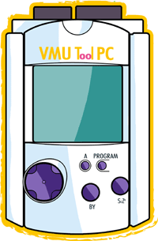

Please select a chapter in the left treeview.
Please select a chapter in the left treeview.
This's VMU TOOL PC !
2002-2006 ©reated by [big_fury]SiZiOUS
and Speud
Welcome in the VMU TOOL PC help file !
VMU TOOL PC is a cool Windows-Like explorer which allows you to manage Dreamcast's saves on your PC. You can get all information you want, such VMU icons, copyright, size, etc, modify these information, and much more.
Please select a chapter in the left treeview.
[big_fury]SiZiOUS
Help v1.0